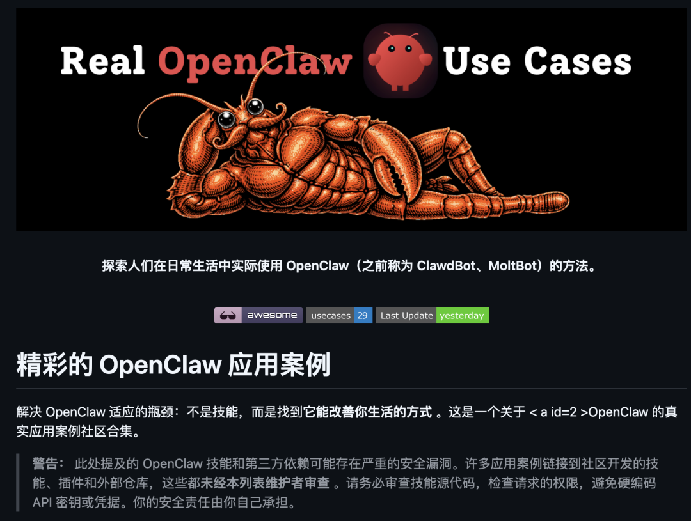
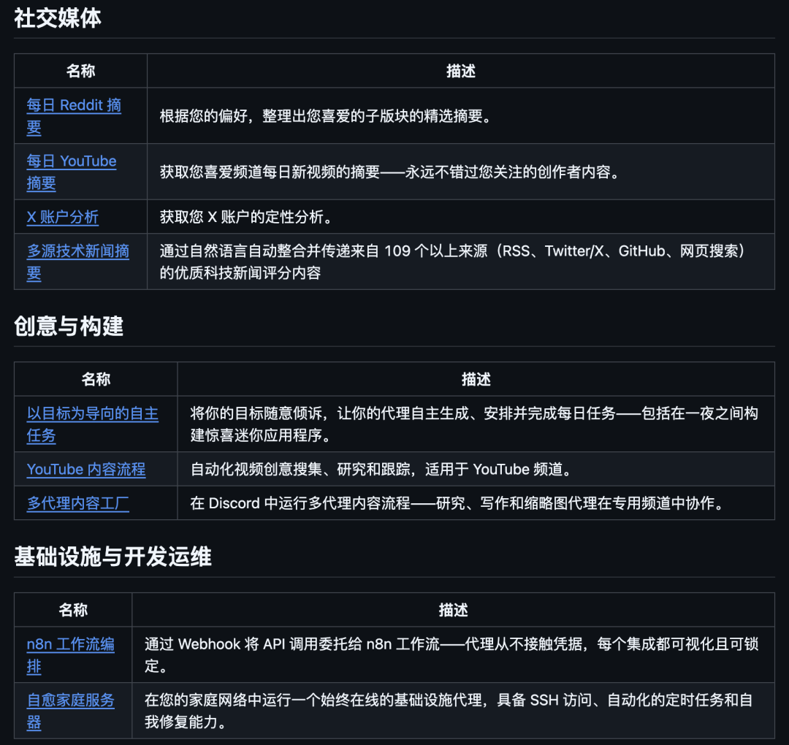
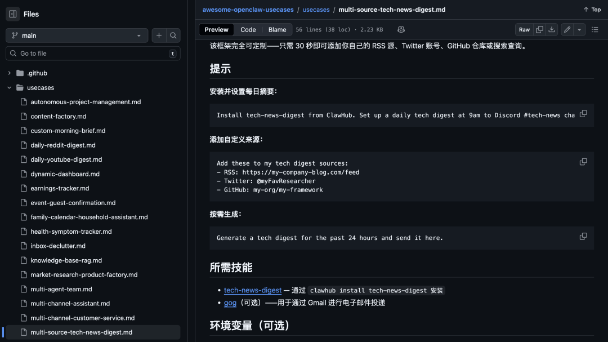
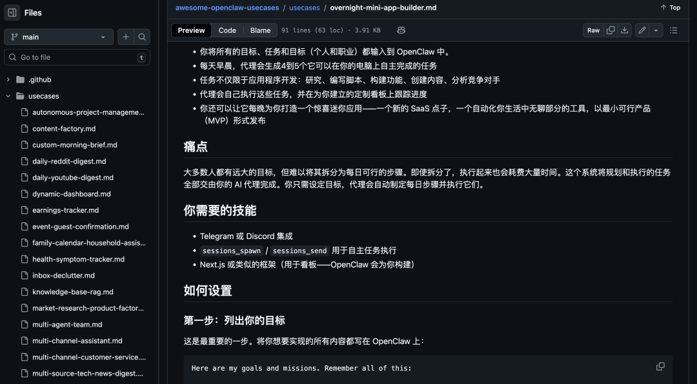
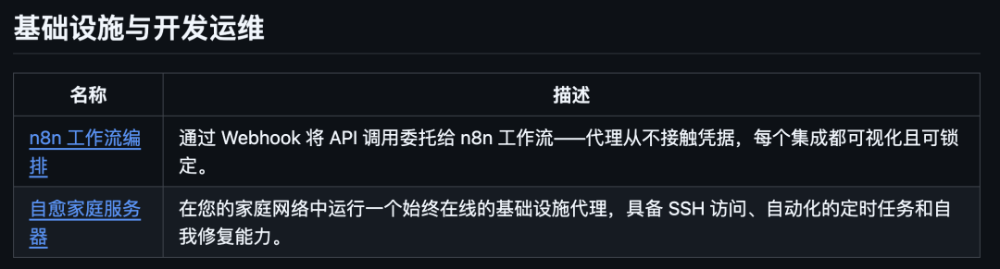
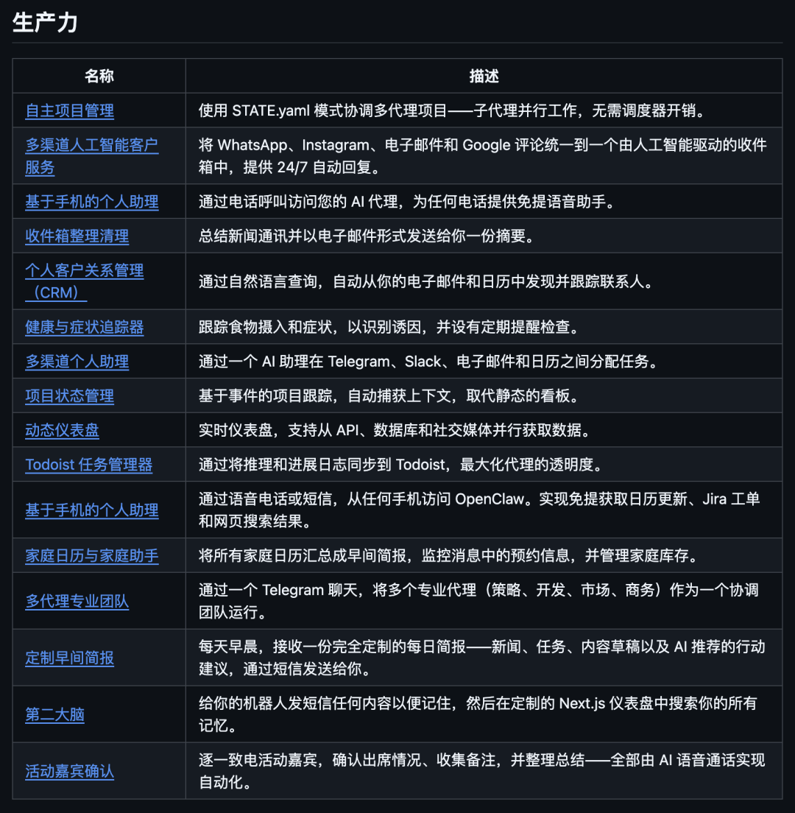
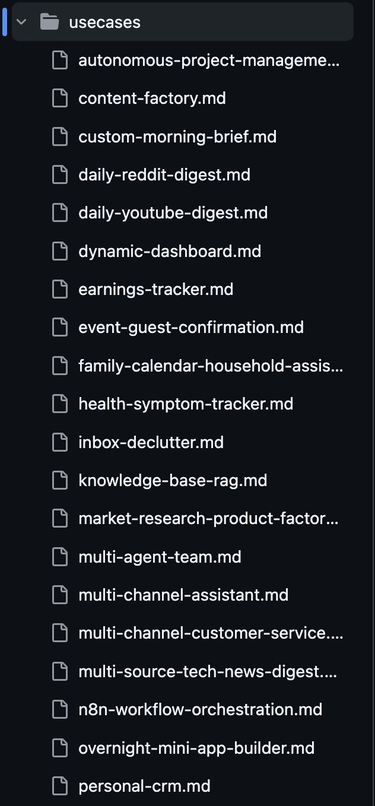
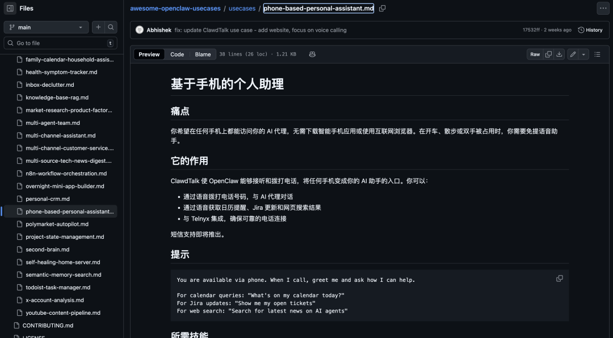

最近逛 GitHub 的时候发现了一个挺有意思的仓库，专门收集 OpenClaw 的 usecases。
说实话，很多人装完 OpenClaw 之后的操作都是一样的：疯狂往里面塞各种 Skill，ClawHub 逛得跟菜市场一样热闹，今天装个天气查询，明天装个股票分析，后天又来个翻译助手。
结果装了一堆却发现每天还是在信息搜索、做个记录。Skill 装了一百个，生活一点没变轻松。
这个开源项目就是专门收集人们真实在用的 OpenClaw 场景，而不是单纯介绍某个 Skill 或插件。
01
开源项目简介

awesome-openclaw-usecases 目前收录了 30 多个经过验证的真实使用场景。
它的核心理念非常简单：不是教你装什么 Skill，而是告诉你别人是怎么把 OpenClaw 变成真正能帮人类干活的私人助理的。
如果你不知道 OpenClaw 具体能做什么，只停留在抽象概念。有一些自动化或搭建 AI 智能体想法，但不知道如何系统落地，想参考别人已经跑通的真实工作流和自动化方案。
希望有成熟路径而不是从零瞎试，可以瞧瞧这个开源项目。看了一下这个仓库的用例，分成了六大类，每个都挺实用的。

社交媒体类
很多人在用 OpenClaw 做信息获取和账号分析。比如每天自动汇总你关注的 subreddit，按你的偏好生成摘要。
还有人会让 AI 来盯关注的频道每天有新视频时，自动生成摘要，不再手动刷订阅。
还可以对你的社交媒体账号做定性分析，比如内容风格、互动情况啥的。
最实用的，还是 Multi-Source Tech News Digest，从 100+ 技术来源，比如 RSS、X、GitHub、搜索等自动抓取新闻，做质量打分和聚合。
这个开源项目已经准备好了配置流程，很适合 想减少信息噪音、构建信息饮食体系的人。

创意与构建
重点在自动构建东西。
比如 Goal-Driven Autonomous Tasks 或者 Overnight Mini App Builder。
你只要脑暴目标，OpenClaw 会自己拆解任务、安排执行，甚至夜里自动帮你构建小应用。

初次之外，还有自动化 YouTube 创作流水线：选题挖掘 → 资料研究 → 选题追踪。
在 Discord 中搭建多智能体内容工厂：研究 agent、写作 agent、缩略图设计 agent，各自在专用频道里并行工作。
内容创作者、独立开发者可以去瞧瞧。
基础设施与运维
也有一个偏工程或者自动化运维的实践。比如把复杂 API 集成交给 n8n 工作流来做，OpenClaw 只通过 webhook 调用 n8n，智能体本身不用碰密钥，所有集成在 n8n 可视化界面中配置和锁定。
还有智能体常驻在你的家庭服务器或小型集群上，具备：SSH 访问能力、定时任务，自我监控和自愈。

生产力
这个项目中有很多生产力相关的 usecases。

因为这非常能体现 OpenClaw 最核心的价值，是把你日常分散在手机、邮箱、日历里的信息入口，统一交给一个 AI 助理来处理。
比如可以用电话就能呼叫个人助手，开车或做家务时用语音问日程、查任务、搜资料。
每天早晨收到为你定制的 AI 晨报，自动汇总新闻、当天安排和建议行动。
Autonomous Project Management 这类用例，让多个智能体按照统一的 STATE.yaml 状态文件协同工作，自动拆解和跟踪项目任务，而不是靠你手动更新看板。
在认知和关系层面，Second Brain 与 Personal CRM 这两个用例提供了记忆+人脉的长期资产化能力：你可以把任何想记住的东西直接发给 bot。
02
如何使用
每个用例都提供了详细的配置步骤，基本上都是这个套路。
直接打开仓库的 usecases 文件夹，按类别浏览Social Media、Creative、Infrastructure、Productivity、Research、Finance 重点关注你最迫切想解决的场景类别。

比如 Productivity 里的 Second Brain，每个文件名都是带编号的 .md 文档，阅读其概述和实现思路。
然后是理解架构模式，每个用例文档包含：场景描述、技术栈、工作流图示、所需技能列表。
注意看文档中提到的核心组件，不需要完全复刻，而是理解消息触发 → Agent 处理 → 输出交付的模式。

03
点击下方卡片，关注逛逛 GitHub
这个公众号历史发布过很多有趣的开源项目，如果你懒得翻文章一个个找，你直接关注微信公众号：逛逛 GitHub ，后台对话聊天就行了：